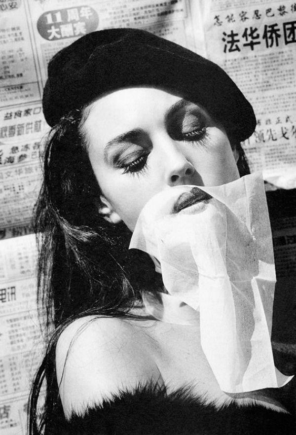
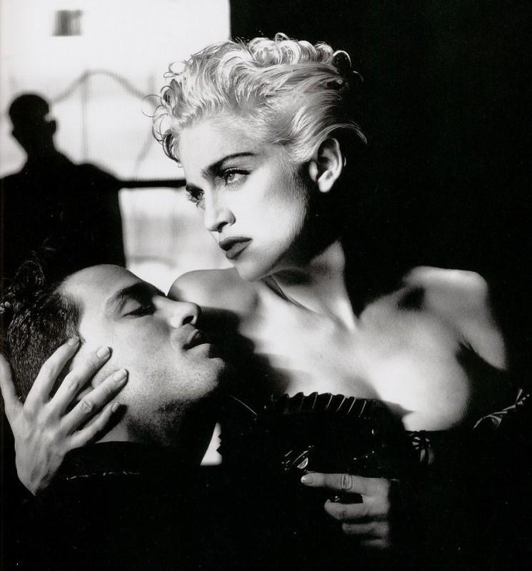

Helmut Newton.
Born Helmut Newton Neustädter into a Jewish family in Berlin in 1920, Helmut Newton expressed an early interest in photography and in 1936 began working for the German photographer Elsie Simon, who went by the name Yva. After his family fled Germany in 1938, Newton landed in Singapore, where he found work as a photographer. He was interned by authorities in Singapore and sent to Australia. After his release, he served in the Australian army for five years, enabling him to become an Australian citizen. He changed his name to Helmut Newton in 1946.
Newton became an iconic fashion photographer recognized for his radical, edgy, and, at times, racy subject matter. Inspired by film noir, Expressionist cinema, S & M, and surrealism, Newton’s images are controversial, provocative, and heavily voyeuristic in nature. Newton preferred to work outside the studio and searched for the elaborate decor of turn-of-the-century mansions, elegant villas, or distinguished hotels to stage his models. Newton pushed the boundaries of the fashion industry with his erotically charged often menacing imagery. Feminists criticized Newton as overly suggestive and unnecessarily "risqué."
